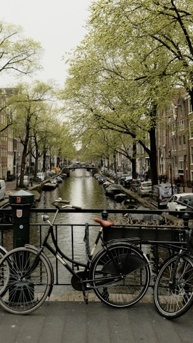
Serunya Bersepeda Menyusuri Kanal-Kanal Amsterdam
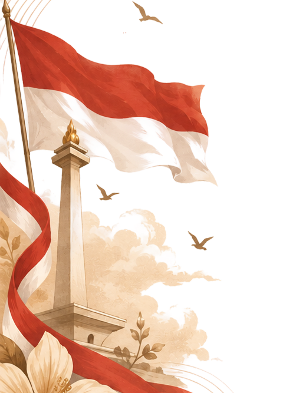
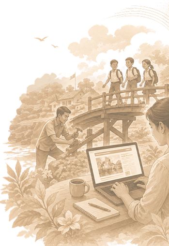
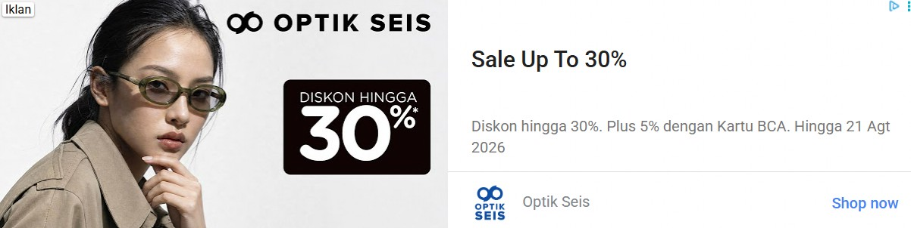
Dapatkan pengalaman membaca tanpa iklan. Gabung KOMPAS.com+
Setiap kebaikan punya cerita tersendiri, setiap cerita bisa menginspirasi untuk membangun Indonesia.

Serunya Bersepeda Menyusuri Kanal-Kanal Amsterdam
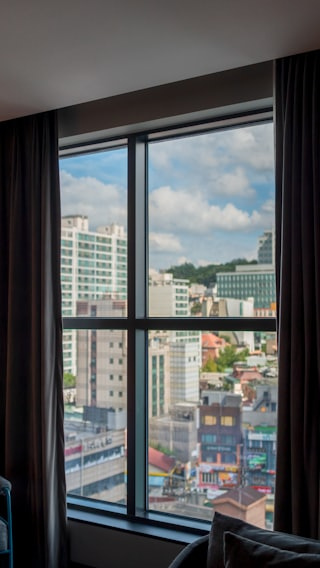
Diskon 75% Hotel Berpemandangan Kota, Buruan Cek!
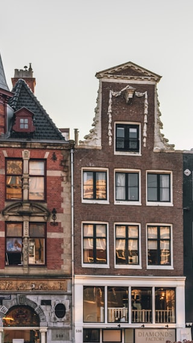
Rumah Klasik di Tepi Kanal, Ikon Wisata Belanda
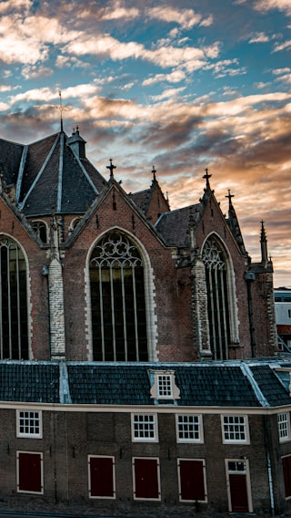
Gereja Tua Bersejarah, Landmark Wajib Dikunjungi
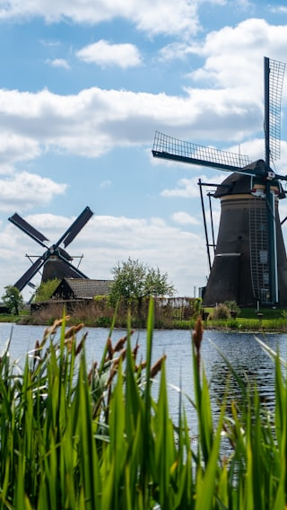
Kincir Angin Kinderdijk, Situs Warisan Dunia UNESCO
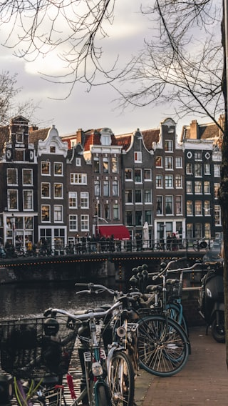
Jalan-Jalan di Amsterdam, Kota Sejuta Sepeda
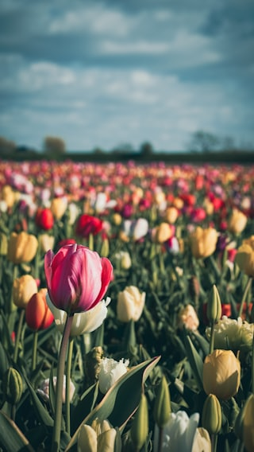
Musim Semi di Belanda, Ladang Tulip Berwarna-Warni
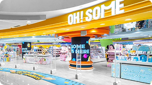
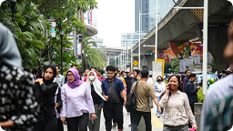
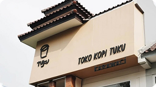
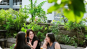
05:25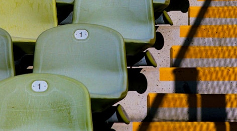
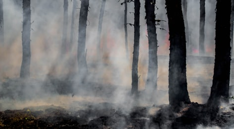
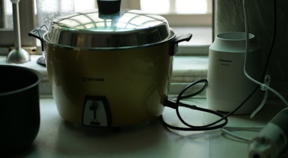
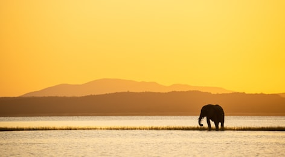